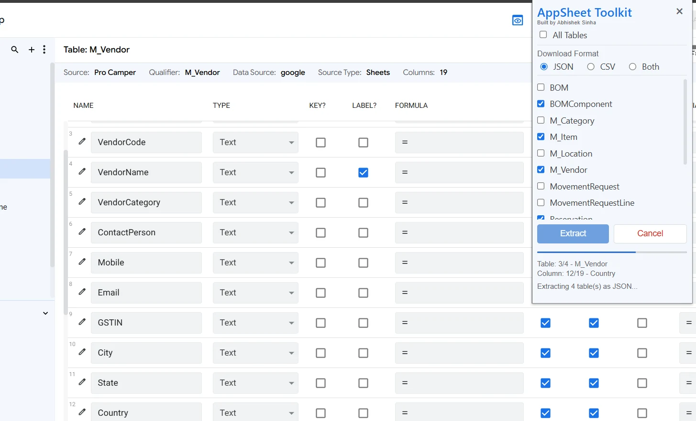
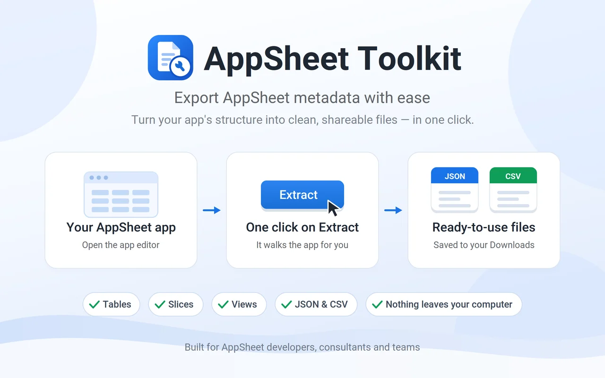
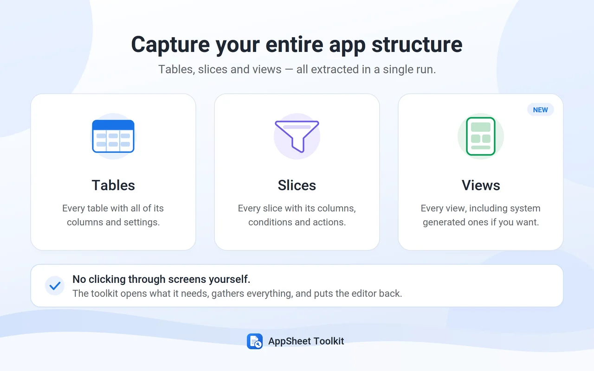
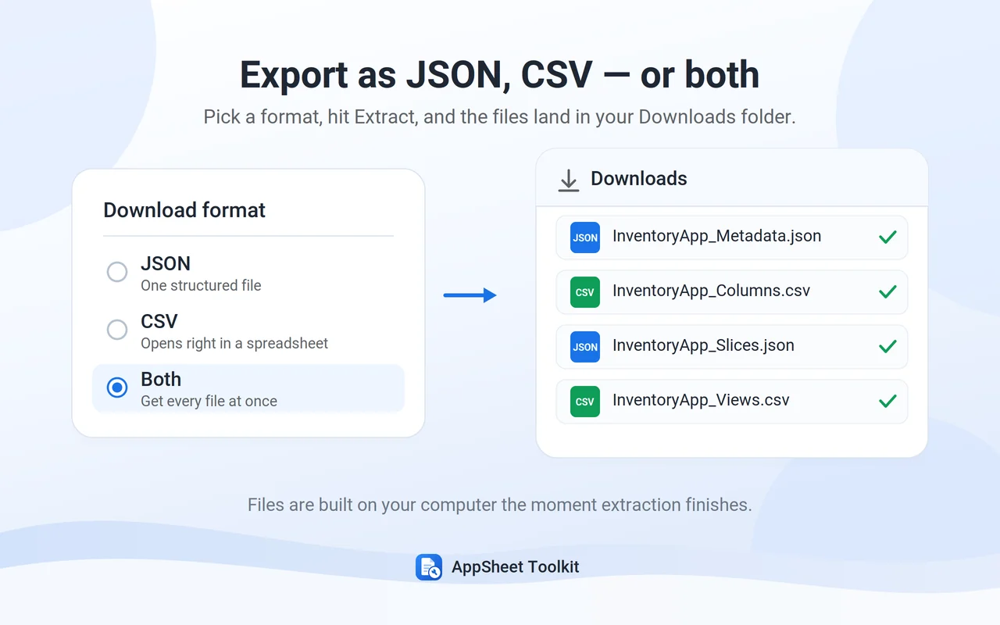
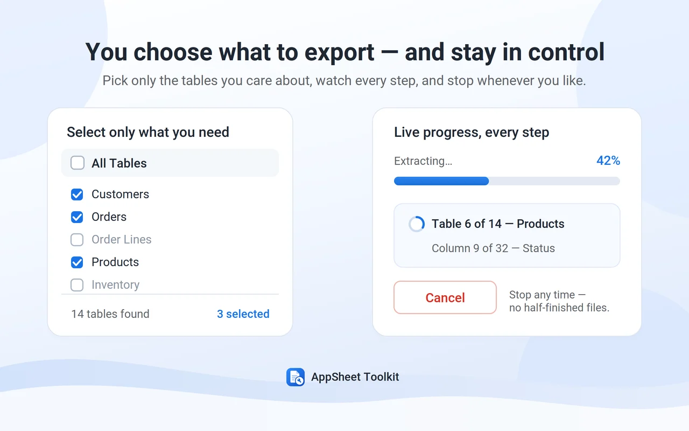
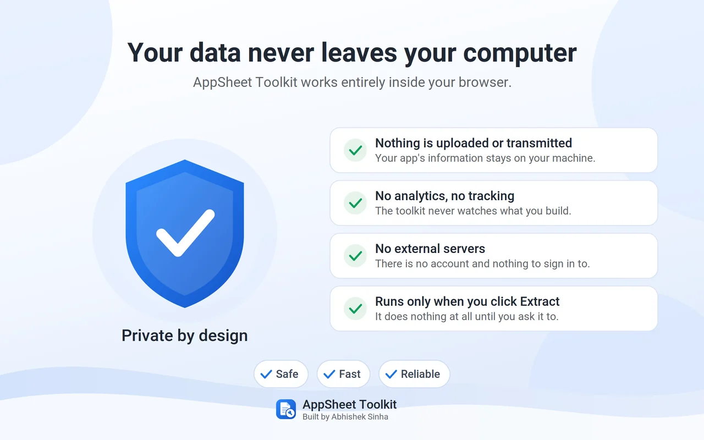
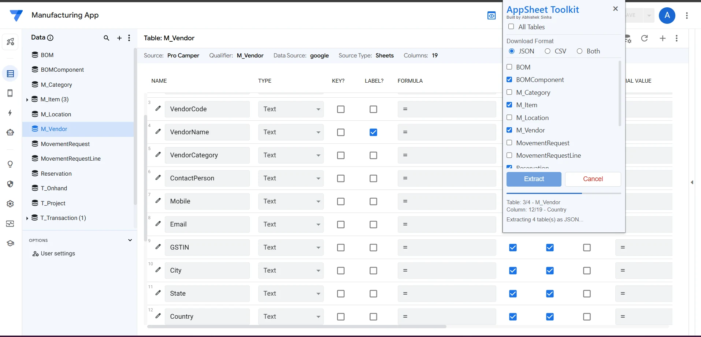

Tables and columns
Extract table and column configuration including formulas, validation, references, display settings, and supported properties.
Browser extension for AppSheet developers
Capture supported AppSheet configuration in a Complete App Snapshot, then compare versions, explore dependencies and change impact, review App Health, and generate technical documentation — all locally in your browser.
Works with existing AppSheet applications. No separate account required.

Two focused modes
Use Extract to capture supported AppSheet configuration. Use Analyze to compare, understand, review, and document the application from a Complete App Snapshot.
Extract table and column configuration including formulas, validation, references, display settings, and supported properties.
Capture Slices, custom Views, and supported System Generated Views with their available configuration.
Extract Actions, Bots, Events, Processes, and supported Tasks including email, Apps Script, and data actions.
Create one structured JSON snapshot containing the supported application configuration for analysis, comparison, documentation, and handover.
Compare two Complete App Snapshots and review added, removed, and changed configuration in a full-width workspace.
Explore what a component uses, what uses it, and the discovered downstream impact before making a change.
Review unresolved references, maintainability signals, duplicate-like configuration, and other static review candidates.
Generate structured HTML and Markdown documentation covering the data model, configuration, automation, dependencies, and App Health findings.
From the Chrome Web Store
Selected user testimonials from AppSheet developers using the toolkit.
This is an incredible piece of software that I've been looking for for years.
Excellent to export and properly parse a full AppSheet App's definition
Genuinely saves hours of manual documentation work.
A closer look
A quick visual tour of the extraction workflow. Analysis tools open in dedicated full-width pages when you need more space.





Why use it?
Turn AppSheet configuration into structured evidence you can review, compare, explain, and document without repeatedly opening every editor screen.
Compare snapshots before and after a change to see exactly what was added, removed, or modified.
Explore discovered dependencies and downstream usage before modifying a column, slice, view, action, or automation component.
Surface review candidates and maintainability signals without pretending static analysis can replace developer judgment.
Generate technical documentation and keep a structured snapshot for troubleshooting, migration, and project handover.
Simple workflow
Open the AppSheet application you want to inspect and launch AppSheet Toolkit in the side panel.
Select individual components or create a Complete App Snapshot containing the supported application structure.
Compare snapshots, explore App Intelligence, run App Health, or generate Technical Documentation from the snapshot.
Review changes, investigate impact, improve maintainability, document the app, or use the structured output in your wider workflow.
Works where you work
The side panel stays compact for extraction and tool selection, while larger comparison, impact, health, and documentation results open in full-width pages.

Built from a real developer pain point
AppSheet Toolkit started by removing the repetitive work of reviewing and copying metadata one screen at a time. It has evolved into a local-first toolkit for extracting application configuration, comparing versions, understanding dependencies and impact, reviewing App Health, and generating technical documentation.
Product roadmap
v1.9.1 brings the core local analysis layer together: Extract, Compare, App Intelligence, App Health, and Technical Documentation. The next major direction is an optional AI layer built on top of this deterministic local foundation.
Share a feature request →Privacy first
AppSheet configuration is read only when you initiate Toolkit functionality and is processed locally in your browser. Extracted metadata and analysis results are not transmitted to the developer or third-party servers.
FAQ
The essentials, without the fine print.
No. AppSheet configuration is processed locally in your browser and is not transmitted to the developer or third-party servers.
Toolkit supports Tables and Columns, Slices, Views, Actions, Automation Bots, Events, Processes, supported Tasks, and a Complete App Snapshot containing the supported configuration in one JSON file.
Analyze contains Snapshot Comparison, App Intelligence, App Health, and Technical Documentation. These tools work from Complete App Snapshot files and run locally in your browser.
It builds a static dependency model from the snapshot so you can explore what a component uses, what uses it, and discovered direct or downstream impact. It is an analysis aid, not a runtime guarantee.
App Health identifies static review candidates such as unresolved references, maintainability signals, duplicate-like configuration, and potentially unused components. Findings are intentionally presented for developer review rather than automatic deletion.
Yes. Technical Documentation can generate structured HTML and Markdown covering the application summary, data model, configuration, automation, dependencies, App Health findings, and an optional baseline comparison.
Yes for regular component exports. Complete App Snapshot is generated as structured JSON because it is also the input for the Analyze tools.
No. AppSheet Toolkit is an independent third-party extension and is not affiliated with or endorsed by Google.
Free browser extension
Create a Complete App Snapshot, compare versions, explore impact, review App Health, and generate technical documentation without sending application metadata to an external analysis service.